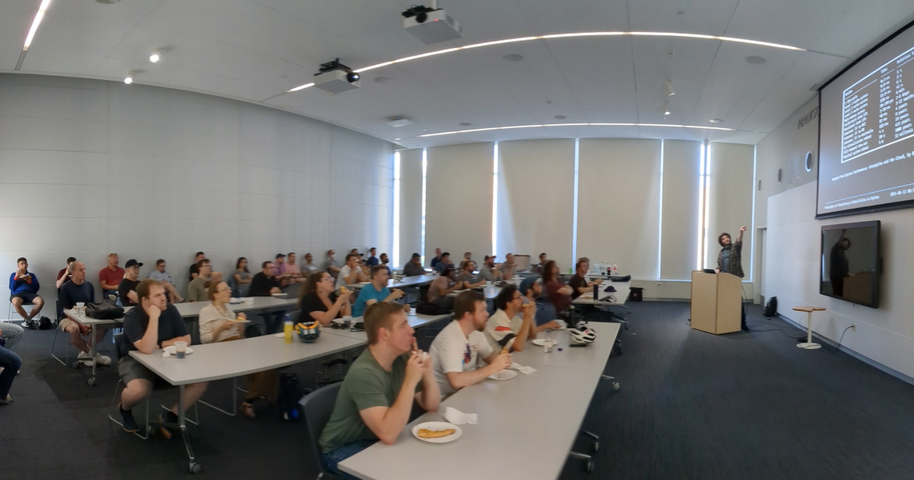

Slides from Josh's talk:
Interested in concurrency and parallelism in Python? For our June meeting, MadPy will have Josh Karpel guide us through the fundamental concepts and decision-making processes critical for making the most of these techniques. Learn the 'why' behind using concurrency and parallelism in your projects!
Josh Karpel is a Senior Machine Learning Engineer at Workday where he designs and develops systems for connecting ML predictions to the outside world. Josh earned his PhD in physics at UW-Madison and was a Postdoctoral Fellow at the Morgridge Institute facilitating research computing at enormous scale through the Center for High Throughput Computing.